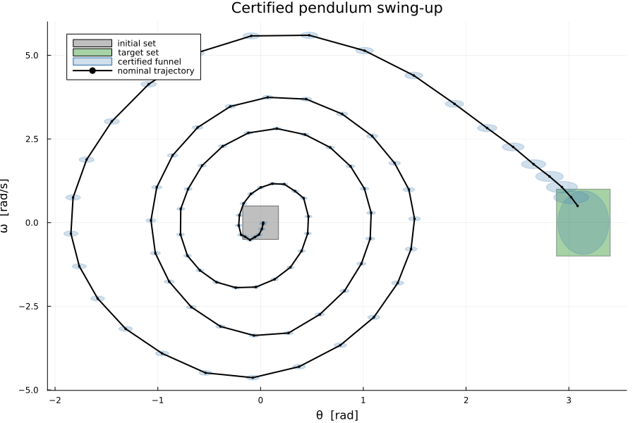

Trajectory certification: generate, then certify
| System | 2-D continuous, nonlinear (pendulum) |
| Specification | reach (swing-up) |
| Solver | MPPI/CEM generation + ellipsoidal funnel certification |
Abstraction-based synthesis explores the whole state space; this solver family splits the work instead: a cheap stochastic planner proposes one nominal trajectory, and a chain of small SDPs certifies it — synthesizing, for every step k, an ellipsoid $E_k$ and an affine feedback $κ_k$ with the invariant
\[x ∈ E_k,\; u = κ_k(x) \;⟹\; f(x, u) ∈ E_{k+1},\]
with the last ellipsoid inside the target set. The chain (a funnel) is the formal guarantee: every state of the entry ellipsoid is steered into the target, with all inputs feasible. The certificate is the controller.
Driven through MathOptInterface directly: the SDP backend and the symbolic linearization provider it needs are not expressible in the JuMP front-end.
import LazySets
import LinearAlgebra as LA
import MathematicalSystems as MS
using StaticArrays, Plots
using JuMP, Clarabel # JuMP exports `MOI`; the docs environment has no direct MathOptInterface dependency
using Symbolics
using Random, Test
using Dionysos
const DI = Dionysos
const UT = DI.Utils
const ST = DI.System
const PR = DI.Problem
const MP = DI.Mapping
const AB = DI.Optim.Abstraction
const EB = AB.EllipsoidalTrajectoryCertifier
include(
joinpath(
dirname(dirname(pathof(Dionysos))),
"problems",
"Pendulum",
"simple_pendulum.jl",
),
);The control task
Pendulum swing-up: from hanging down ($θ = 0$) to upright ($θ = π ± 15°$, $|ω| ≤ 1$), with the benchmark's true input bound $|τ| ≤ 4.5$. The angle is periodic, which both the planner and the certification frame must respect.
params = SimplePendulum.Params(; l = 1.0, g = 9.81)
problem = SimplePendulum.optimal_control_problem(;
params = params,
objective = "reachability_up_medium_power_no_obstacle",
)
Δt = 0.1
periodic_dims = SVector(1)
periods = SVector(2π)
wrap = UT.get_periodic_wrapper(periodic_dims, periods; start = SVector(-π));Stage 1a — a coarse seed from a grid abstraction
Any trajectory can seed the planner; a coarse abstraction-based controller is a reliable way to get one that already swings up.
opt = MOI.instantiate(AB.UniformGridAbstraction.Optimizer)
MOI.set(opt, MOI.RawOptimizerAttribute("concrete_problem"), problem)
MOI.set(opt, MOI.RawOptimizerAttribute("h"), SVector(3.0 * π / 180.0, 0.1))
MOI.set(
opt,
MOI.RawOptimizerAttribute("input_grid"),
MP.GridFree(SVector(0.0), SVector(0.3)),
)
MOI.set(opt, MOI.RawOptimizerAttribute("time_step"), Δt)
MOI.set(opt, MOI.RawOptimizerAttribute("approx_mode"), AB.UniformGridAbstraction.GROWTH)
MOI.set(
opt,
MOI.RawOptimizerAttribute("jacobian_bound"),
SimplePendulum.jacobian_bound(params),
)
MOI.set(opt, MOI.RawOptimizerAttribute("use_periodic_mapping"), true)
MOI.set(opt, MOI.RawOptimizerAttribute("periodic_dims"), periodic_dims)
MOI.set(opt, MOI.RawOptimizerAttribute("periodic_periods"), periods)
MOI.set(opt, MOI.RawOptimizerAttribute("periodic_start"), SVector(-π))
MOI.set(opt, MOI.RawOptimizerAttribute("early_stop"), true)
MOI.set(opt, MOI.Silent(), true)
seed_gen = AB.OptimizerTrajectoryGenerator.TrajectoryGenerator(
opt;
initial_state = SVector(0.0, 0.0),
concrete = false,
nstep = 100,
)
AB.set_problem!(seed_gen, problem)
AB.generate!(seed_gen)
seed_traj = AB.get_trajectory(seed_gen)
length(ST.states(seed_traj))34Stage 1b — CEM refinement
The sampling-based planner polishes the seed under wrap-aware costs. Two details matter for the certificate downstream. First, the input reserve: the plan only uses $60\%$ of the input budget, so the feedback $κ_k$ can spend the rest defending the funnel. Second, the terminal pull: the reach cost scores the closest pass, so an extra endpoint cost is what drives the final state deep into the target — a centered endpoint is what lets a large terminal ellipsoid be inscribed.
base = PR.discretize_problem(problem, Δt; num_substeps = 5)
T_split = UT.set_in_period(problem.target_set, periodic_dims, periods, SVector(-π))
discrete_problem = PR.OptimalControlProblem(
base.system,
base.initial_set,
T_split,
base.state_cost,
base.transition_cost,
base.time,
base.safe_set,
)
u_max = 4.5
u_plan = 0.6 * u_max
cost = AB.CompositeCost(
AB.ReachObjectiveCost(T_split; wrap = wrap),
AB.TerminalPullCost(
[π, 0.0],
[0.249, 0.95];
w = 500.0,
wrap = wrap,
periods = [2π, nothing],
),
AB.InputEffortCost(0.001),
AB.InputSmoothnessCost(; w_du = 0.05, w_ddu = 0.01),
AB.DomainPenaltyCost(problem.system.X; wrap = wrap),
)
mppi = AB.MPPITrajectoryGenerator.TrajectoryGenerator(;
rng = Random.MersenneTwister(1),
seed_trajectory = seed_traj,
nstep = 90,
nsamples = 1000,
niter = 40,
noise = AB.MPPITrajectoryGenerator.GaussianMPPINoise(SVector(0.8)),
project_input = u -> SVector(clamp(u[1], -u_plan, u_plan)),
cost = cost,
wrap_state = (problem, x) -> wrap(x),
update_rule = :cem,
elite_frac = 0.05,
antithetic = true,
stop_on_success = false,
)
AB.set_problem!(mppi, discrete_problem)
AB.generate!(mppi)
@test AB.get_success(mppi)Test PassedThe certification chain works on the lifted (unwrapped) trajectory, shifted so the endpoint lands at the upright position $θ = π$:
traj = AB.get_trajectory(mppi)
lifted = ST.unwrap_trajectory(traj, (1,), (2π,))
θN = collect(ST.states(lifted))[end][1]
shift = 2π * round((θN - π) / (2π))
xs_lift = [SVector(x[1] - shift, x[2]) for x in ST.states(lifted)]
lifted = ST.Trajectory(xs_lift; inputs = collect(ST.inputs(lifted)))
length(ST.inputs(lifted))89Stage 2 — ellipsoidal certification
The per-step SDP needs sound local models: a symbolic provider computes exact Jacobians and interval Hessian bounds of the RK4-discretized dynamics over each linearization box. Certification runs in globally normalized coordinates $z = x ./ t$ (built symbolically once, so the bounds stay exact in the working frame) — on this benchmark, certification without normalization dies mid-chain from conditioning alone.
Symbolics.@variables θ ω τ w1 w2 T
f_cont(xloc, uloc) = collect(SimplePendulum.dynamic(params)(xloc, uloc))
f_disc = ST.runge_kutta4(f_cont, [θ, ω], [τ], T, 1)
fsymbolic = Symbolics.substitute([f_disc[1] + w1, f_disc[2] + w2], Dict(T => Δt))
Wset = LazySets.Hyperrectangle(; low = SVector(0.0, 0.0), high = SVector(0.0, 0.0))
provider = ST.SymbolicAffineApproximationProvider(
fsymbolic,
[θ, ω],
[τ],
[w1, w2],
[0.0, 0.0],
ST.format_input_set(problem.system.U),
ST.format_noise_set(Wset),
)
t = [0.85 * 15.0 * π / 180.0, 0.25]
zprovider = ST.normalized_symbolic_provider(provider, t)
zproblem = PR.OptimalControlProblem(
base.system,
ST.normalize_box(problem.initial_set, t),
ST.normalize_box(problem.target_set, t),
nothing,
nothing,
base.time,
nothing,
)
ztraj = ST.normalize_trajectory(lifted, t);The backward chain starts from an ellipsoid inscribed in the target around the endpoint and synthesizes each $(E_k, κ_k)$ against $E_{k+1}$, searching linearization-box scales for the largest certified ellipsoid. The chain maximizes the smallest semi-axis (:maximin) — the robust size objective: a pancake-collapsed ellipsoid is worthless under it, so long chains keep genuine volume in every direction.
adaptive_opts = EB.AdaptiveLinearizationBoxOptions(;
ΔX_initial = [0.05, 0.10] ./ t,
ΔX_min = [0.005, 0.005] ./ t,
ΔX_max = [2.5, 3.5] ./ t,
ΔU_initial = [0.25],
ΔU_min = [0.01],
ΔU_max = [4.5],
search_scales = [0.75, 1.0, 1.5, 2.0],
objective = :max_volume,
)
back_opts = EB.ChainOptions(;
maxδx = 12.0,
maxδu = 3.0,
λ = 0.001,
terminal_shrink = 0.95,
linearization_δx = [0.05, 0.10] ./ t,
linearization_δu = [1.0],
adaptive_boxes = adaptive_opts,
objective = :maximin,
check_state_domain = false,
)
sdp = optimizer_with_attributes(Clarabel.Optimizer, "verbose" => false)
bw = EB.BackwardCertifier(zprovider, sdp, back_opts)
AB.set_problem!(bw, zproblem)
AB.set_trajectory!(bw, ztraj)
AB.certify!(bw)
res = EB.get_result(bw)
@test res.success
@test res.terminal_contained == trueTest PassedEvery step certified, terminal ellipsoid inside the target: the specification is closed. The certified product is a ST.FunnelController — the step-indexed feedbacks with their validity regions:
zctrl = EB.get_controller(bw)
length(zctrl.kappas)89The certificate, exercised
The guarantee is falsifiable: sample the entry ellipsoid, replay the funnel feedbacks on the certified (RK4-discretized) plant map, and every sample must land in the target — no re-planning, no exceptions.
f_ode = SimplePendulum.dynamic(params)
function f_x(x, u)
k1 = f_ode(x, u)
k2 = f_ode(x + Δt / 2 * k1, u)
k3 = f_ode(x + Δt / 2 * k2, u)
k4 = f_ode(x + Δt * k3, u)
return x + Δt / 6 * (k1 + 2 * k2 + 2 * k3 + k4)
end
f_z(z, u) = SVector{2}(f_x(SVector{2}(t .* z), u) ./ t)
E_entry = res.lmi_data.ellipsoids[1]
zT = ST.normalize_box(problem.target_set, t)
n_samples = 25
n_ok = 0
rng_val = Random.MersenneTwister(7)
for zs0 in UT.samples(E_entry, n_samples; rng = rng_val)
z = SVector{2}(zs0)
for κ in res.lmi_data.kappas
u = SVector{1}(clamp.(Matrix(κ.A) * collect(z) .+ collect(κ.c), -u_max, u_max))
z = f_z(z, u)
end
global n_ok += (z ∈ zT)
end
@test n_ok == n_samplesTest PassedThe funnel
The certified corridor in the lifted $(θ, ω)$ plane: every state inside a blue ellipsoid is provably steered along the chain into the target.
fig = plot(;
xlabel = "θ [rad]",
ylabel = "ω [rad/s]",
title = "Certified pendulum swing-up",
legend = :topleft,
size = (900, 600),
)
plot!(fig, problem.initial_set; color = :gray, alpha = 0.5, label = "initial set")
plot!(fig, problem.target_set; color = :green, alpha = 0.35, label = "target set")
for (i, E) in enumerate(res.lmi_data.ellipsoids)
plot!(
fig,
ST.denormalize_ellipsoid(E, t);
color = :steelblue,
alpha = 0.25,
linewidth = 1.2,
linecolor = :steelblue,
label = i == 1 ? "certified funnel" : "",
)
end
plot!(
fig,
[x[1] for x in xs_lift],
[x[2] for x in xs_lift];
color = :black,
linewidth = 2,
marker = :circle,
markersize = 2,
label = "nominal trajectory",
)
fig
This page was generated using Literate.jl.